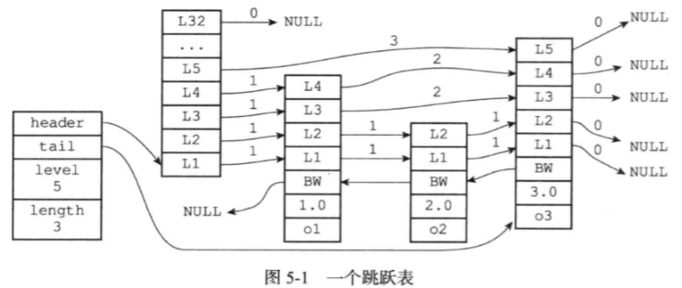

Redis设计与实现笔记四
跳跃表
跳跃表是一种有序数据结构，它通过在每个节点中维持多个指向其他节点的指针，从而达到快速访问节点的目的。
跳跃表支持平均O（logN），最坏O（N）复杂度的节点查找，还可以通过顺序性操作来批量处理节点
Redis使用跳跃表作为有序集合键的底层实现之一，如果一个有序集合包含的元素数量比较多，或者有序集合中的元素的成员是比较长的字符串时候，Redis就会使用跳跃表来作为有序集合键的底层实现
Redis只在两个地方用到了跳跃表，一个是实现有序集合键，另一个是在集群节点中用作内部数据结构
跳跃表的实现
跳跃表由redis.h/zskiplistNode和redis.h/zskiplist两个结构定义，其中zskiplistNode结构用于表示跳跃表节点，zskiplist结构则用于保存跳跃表节点的相关信息，比如节点的数量，以及指向表头节点和表尾节点的指针等。

- header：指向跳跃表的表头节点
- tail：指向跳跃表的表尾节点
- level：记录目前跳跃表内，层数最大的那个节点层数（表头节点除外）
- length：记录跳跃表长度（表头节点不计算在内）
跳跃表节点
1 | * 跳跃表节点 |
- 层：level数组可以包含多个元素，每个元素都包含一个指向其他节点的指针，一般层数越多访问其他节点的速度就越快。每次创建一个新跳跃表节点的时候，程序都根据幂次定律（越大的数出现的概率越小）随机生成一个介于1和32之间的值作为level数组的大小。
- 前进指针：每个层都有一个指向表尾方向的前进指针，用于从表头向表尾方向访问节点
- 跨度：用于记录两个节点之间的距离
- 后退指针：用于从表尾向表头方向访问节点，因为每个节点只有一个后退指针，所以每次只能后退至前一个节点。
- 分值和成员：分值是一个double类型的浮点数，跳跃表中的所有节点都按分值从小到大来排序；成员对象是一个指针，它指向一个字符串对象，而字符串对象保存一个SDS值
在同一个跳跃表中，各个节点保存的成员对象必须是唯一的，但是多个节点保存的分值却可以是相同的：分值相同的节点将按照成员对象的字典序中的大小来进行排序，成员对象较小的节点会排在前面（靠近表头的方向），而成员对象较大的节点则会排在后面（靠近表尾的反向）
跳跃表
通过使用zskiplist结构来持有多个跳跃表节点，程序可以更方便地对整个跳跃表进行处理，如何快速访问跳跃表的表头节点和表尾节点，或者快速地获取跳跃表节点的数量等信息
1 | * 跳跃表 |


原文作者: Yang Peng
原文链接: http://ylovex.cn/2019/07/06/Redis设计与实现笔记四/
版权声明: 转载请注明出处(必须保留作者署名及链接)